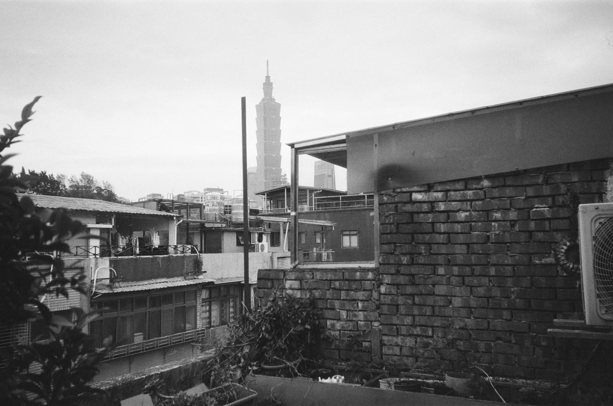
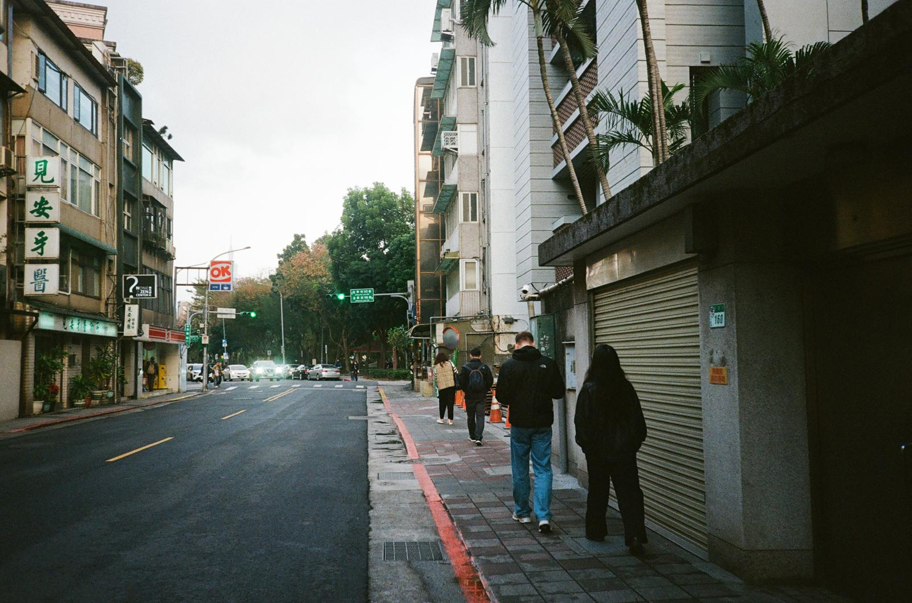
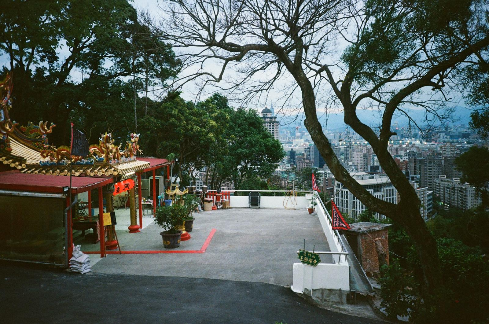
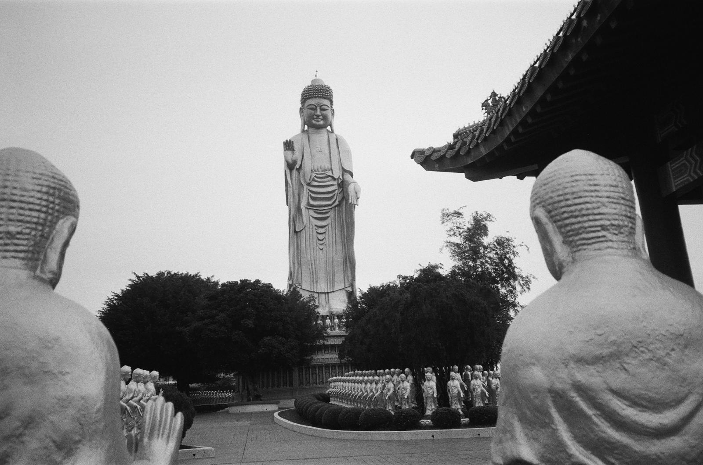

Taipei, January 2025
Lara, 24

with the familiar sounds of beethoven's ‘elise’,
trash trucks sing through the humid breeze.
night markets hum, old streets unfold, a treasure trove of sights untold.
with stinky tofu's night market flair, and 50 NTD vegetarian lunch breaks beyond compare.

at dawn, tai chi moves with practiced grace, the riverside parks, a tranquil space.
capybaras lounge, taiwan barbets sing,
while the buddhist temples present their offerings.

a scooter nation zips and roars,
through taipei’s alleys packed with karaoke stores.
the high-speed rail brings you to a different place,
to mountains, tea fields, and a slower pace.
in family mart, sweet potatoes steam,
tea eggs, onigiri—a convenient dream.
whilst sipping passion fruit green tea,
living in taipei was a sweeter life I've rarely seen.